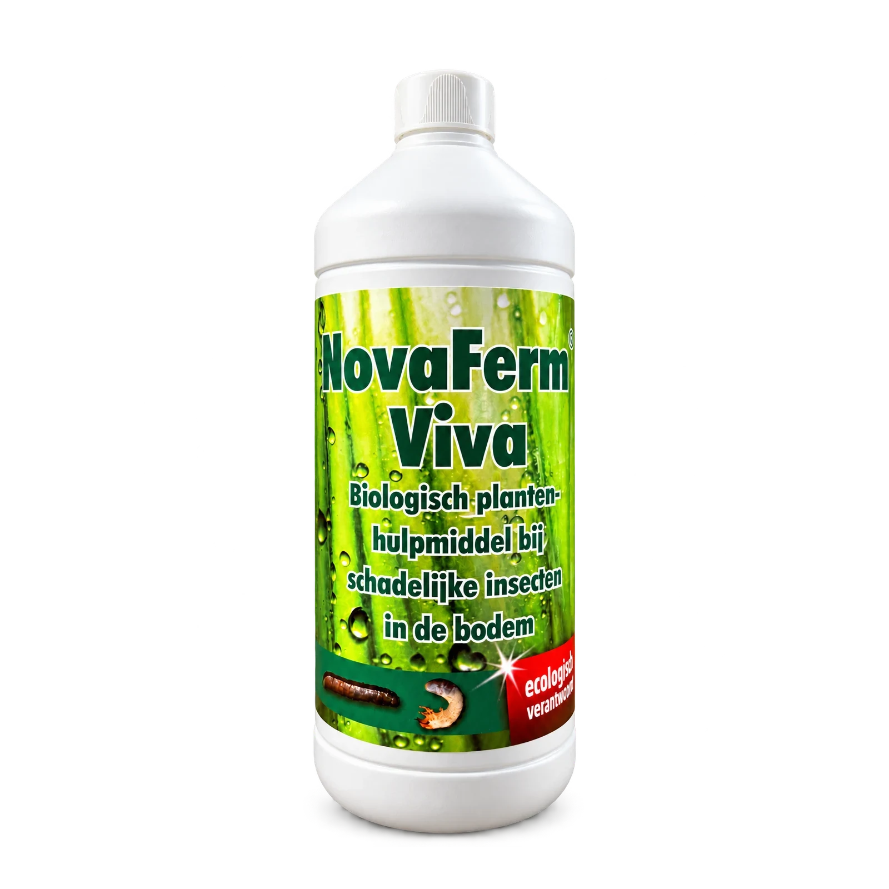

Hoe herken je engerlingen onder het gras?
Bekijk de vorm en de poten samen. Alleen de kleur wit is onvoldoende voor herkenning. Ook larven van andere kevers kunnen erop lijken, zeker wanneer je ze in compost of bij dood hout vindt. Voor het gazon is vooral van belang of er larven bij beschadigde graswortels zitten.
Vind je juist langwerpige grijsbruine larven zonder zichtbare poten? Gebruik dan de vergelijking tussen engerlingen en emelten.
Wat zeggen losse zoden en vogels?
Bij wortelvraat kan de grasmat plaatselijk minder stevig vastzitten. Vogels en andere dieren kunnen het gras verder openmaken terwijl ze larven zoeken. Deze signalen zijn aanleiding om te kijken, geen sluitende diagnose op afstand. Ook droogte of slecht groeiende wortels kunnen een rol spelen.
Leg je waarnemingen vast
- Kies een beschadigde plek. Til voorzichtig een klein los stuk gras op en bekijk de bovenste grondlaag.
- Bekijk een tweede plek. Vergelijk de wortels en grond met een minder beschadigd deel van het gazon.
- Maak herkenbare foto's. Fotografeer de larve van dichtbij, liefst met een maatverdeling, en maak ook een overzicht van de schade.
- Noteer de omstandigheden. Vermeld wanneer de plekken ontstonden en wat je recent hebt gedaan aan water geven, maaien of bemesten.
Wat kun je doen bij vermoedelijke engerlingen?
Zoek je naar engerlingen bestrijden, laat dan eerst beoordelen welke larven en schade je hebt. Kies een gerichte aanpak met een eigen gebruiksvoorschrift. Meer mest strooien verwijdert de oorzaak van wortelvraat niet.
NovaFerm Viva is een plantenhulpmiddel dat volgens de leverancier de groei en weerstand ondersteunt en de gevoeligheid voor schadelijke bodeminsecten vermindert. Bespreek of die toepassing past bij jouw situatie; verwacht geen gegarandeerde verwijdering van alle larven.
Beoordeel daarna wat de grasmat nog nodig heeft. In het advies over gazon herstellen vind je de bredere volgorde van bodemcontrole, onderhoud en eventueel doorzaaien.
Veelgestelde vragen
Veelgestelde vragen
Zijn alle witte larven in de tuin schadelijke engerlingen?
Nee. Kijk ook naar de vindplaats, vorm en poten. Verschillende keverlarven lijken op elkaar; een larve in compost is niet automatisch de oorzaak van gazonschade.
Kan ik meteen opnieuw gras zaaien?
Beoordeel eerst of de oorzaak van de schade nog aanwezig is. Doorzaaien herstelt de groeiomstandigheden of wortelschade niet vanzelf.